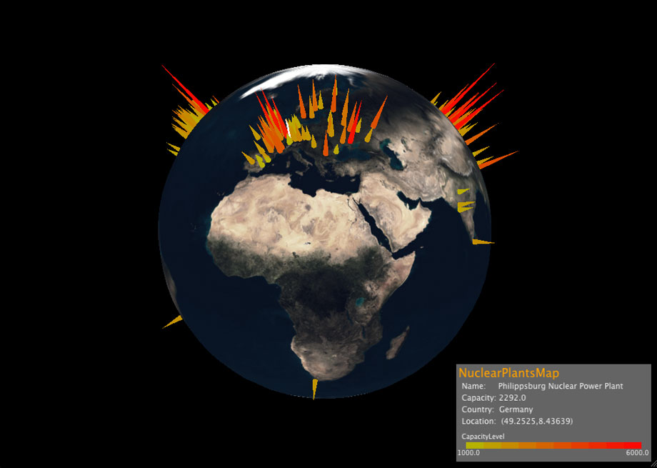

nuclear plants map

Abstract
"Nuclear Plants Map" is a viewer for nuclear power plants on the earth. The data was downloaded from Wikipedia. It visualize nuclear power plants position and size with color and size of cones. It is easy to understand the density of nuclear power plants on the earth. When you click a cone, you can see the name of nuclear power plants. Currently, it visualize 153 plants.
https://github.com/casmi/nuclear-plant-map
Git Repository
git://github.com/casmi/nuclear-plant-map.git
Inside of Program
- It read the list of nuclear power plants with geo-location information from the resources (NuclearPlantsMap.java).
- The csv data is read as objects (PowerPlantLoader.java).
- After that, the data is set to the appropriate position according to the geo-location. A nuclear power plant is visualized as a cone. The cone size indicates size of nuclear power plant. (NuclearPlantsMap.java).
- To manipulate the earth, it uses mouse drag (TrackBall.java).
- It also uses selection buffers to enable to picking cone (NuclearPlantsMap.java).
- For parsing the data, it uses casmi.parser.CSV
- For drawing the earth, it uses casmi.element.Rect, casmi.element.Sphere.
- For drawing nuclear power plants, it uses casmi.graphics.element.Cone.
- For putting textures, it uses casmi.graphics.element.Texture
- For drawing text, it uses casmi.element.Text, casmi.graphics.element.Text.TextAlign and casmi.font.Font